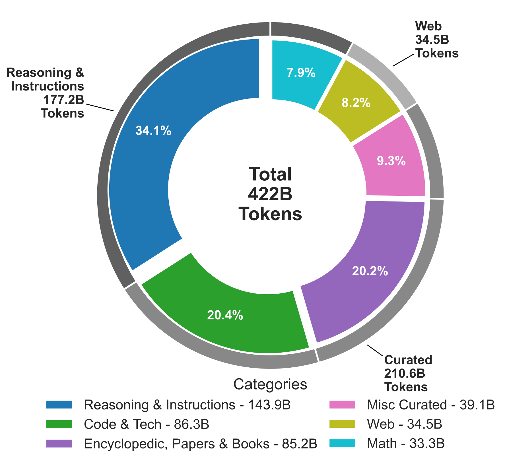
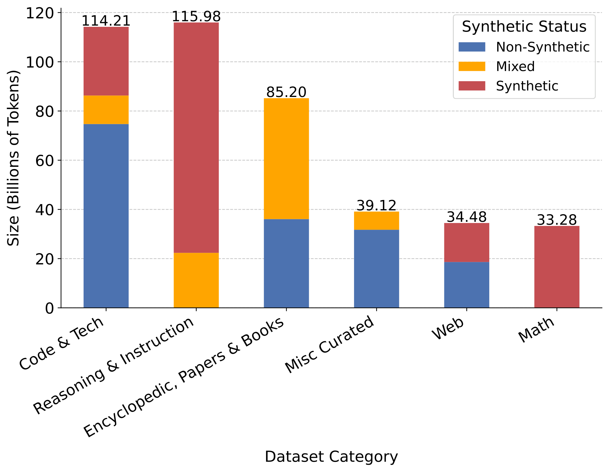
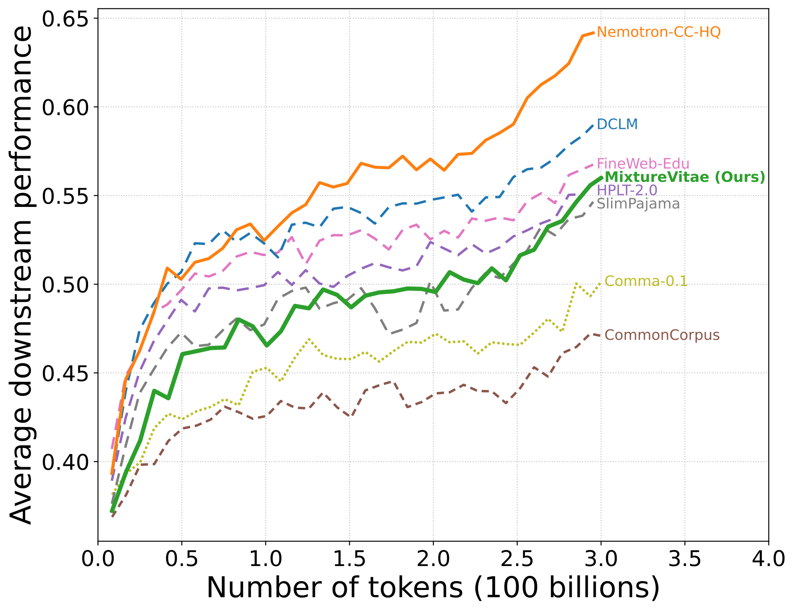
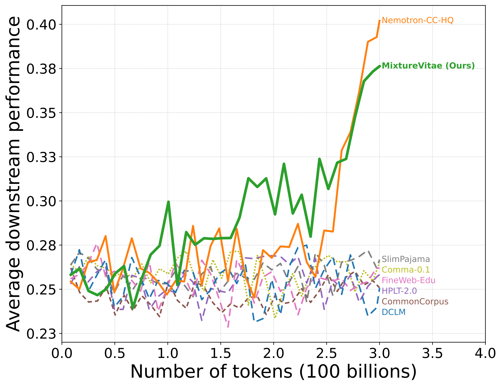
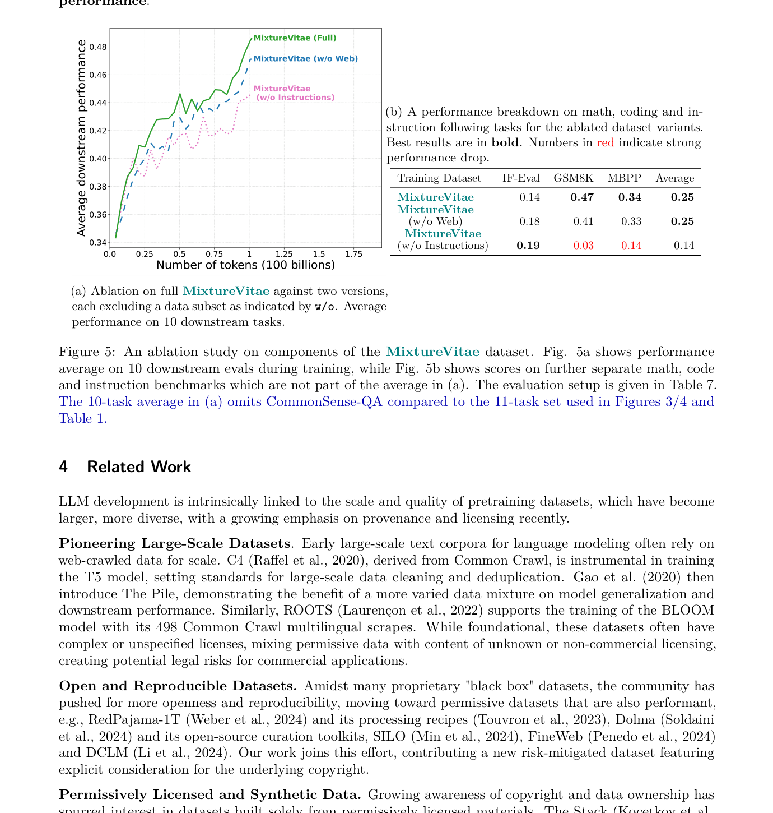

MixtureVitae is a 422B-token pretraining corpus built mostly from permissively licensed or public-domain text, plus a small transparent risk-mitigated slice. Its main bet is simple: put reasoning and instruction data into pretraining instead of saving it for fine-tuning.
Numbers below are for a 1.7B base model trained for 300B tokens — no fine-tuning.
Most high-performing pretraining datasets mix permissive content with copyrighted or ambiguously licensed material. Datasets that stick strictly to permissive sources tend to fall behind on reasoning-heavy benchmarks. That gap has made it hard to build capable models without accepting legal uncertainty.
MixtureVitae is a direct attempt to close that gap. It starts with clearly reusable sources—CC-BY, Apache, public domain—and adds a small, explicitly tagged set of lower-risk additions. Then, instead of treating reasoning and instruction data as something to add later during fine-tuning, it builds them into the pretraining mix from the start. Most synthetic data in the corpus comes from permissive seeds and permissively licensed models; a small transparent slice uses restricted generators and is isolated so users can exclude it if needed.
The result: strong benchmark results on a dataset whose provenance you can actually audit.
The corpus has three main parts: curated domain sources (scientific papers, code, encyclopedias, patents), a reasoning and instruction block that would usually show up only at fine-tuning, and a smaller web component. Each source is tagged with its synthetic status so the split is transparent.


Every source is assigned to one of three tiers. This is risk-mitigated, not risk-free—copyright law varies by jurisdiction, and users in some regions should get legal advice before using Tier 2 or Tier 3 material.
All models use the same architecture and hyperparameters — only the dataset changes. That makes it straightforward to attribute differences in benchmark scores to the data.


| Training dataset | Tokens | IF-Eval | GSM8K | HumanEval | MBPP | Avg |
|---|---|---|---|---|---|---|
| open-sci-ref — 300B tokens | ||||||
| MixtureVitae permissive | 300B | 0.19 | 0.53 | 0.32 | 0.38 | 0.36 |
| Comma-0.1 permissive | 300B | 0.19 | 0.06 | 0.13 | 0.22 | 0.15 |
| CommonCorpus permissive | 300B | 0.13 | 0.02 | 0.05 | 0.05 | 0.06 |
| C4 mixed | 300B | 0.20 | 0.02 | 0.00 | 0.00 | 0.06 |
| SlimPajama mixed | 300B | 0.14 | 0.02 | 0.05 | 0.00 | 0.05 |
| HPLT-2.0 mixed | 300B | 0.17 | 0.02 | 0.00 | 0.00 | 0.05 |
| DCLM mixed | 300B | 0.13 | 0.02 | 0.01 | 0.01 | 0.04 |
| Nemotron-CC-HQ mixed | 300B | 0.09 | 0.03 | 0.02 | 0.00 | 0.03 |
| open-sci-ref — 1T tokens | ||||||
| FineWeb-Edu mixed | 1T | 0.20 | 0.03 | 0.00 | 0.00 | 0.06 |
| Nemotron-CC-HQ mixed | 1T | 0.13 | 0.03 | 0.01 | 0.04 | 0.05 |
| DCLM mixed | 1T | 0.15 | 0.03 | 0.00 | 0.01 | 0.05 |
| Reference models | ||||||
| SmolLM2-1.7B | 11T | 0.18 | 0.31 | 0.01 | 0.35 | 0.21 |
| SmolLM2-1.7B-Instruct | 11T | 0.28 | 0.37 | 0.28 | 0.37 | 0.33 |
Heavy instruction content in a pretraining corpus raises an obvious question: are these scores real, or is the model just memorizing test items? The paper addresses this directly.
A 13-gram decontamination sweep removed overlapping test items across all benchmarks. Scores were stable — GSM8K went from 0.53 to 0.54, MBPP stayed at 0.38. Retraining after removing the contaminated shards produced nearly identical results.
Three models were trained: the full mix, without web data, and without instruction/reasoning data. Removing instructions caused GSM8K to drop from 0.47 to 0.03. Removing web data dropped it to 0.41. The instruction block is doing most of the work.
Tier 2(b) — synthetic data from restricted or opaque generators — makes up about 4% of the corpus. Removing it produces a training curve indistinguishable from the full model. Users who need stricter provenance can exclude it without giving up performance.
Three variants were trained at 100B tokens: the full mix, without web data, and without the instruction and reasoning block.

MixtureVitae starts with sources that are clearly reusable. Licensing comes first; quality is a secondary filter within that set.
Most web-scale datasets go the other direction — start from a broad crawl, filter out low-quality content, and treat licensing as someone else's problem. MixtureVitae inverts that: a source only gets in if its license is clear (CC-BY, Apache 2.0, public domain) or falls into a narrowly justified lower-risk category like US government works.
No. The goal is lower risk, not a universal legal guarantee. That is why the data is split into tiers and why users can exclude the stricter slices.
The tiering rests primarily on US fair-use doctrine and the EU Text and Data Mining exception. Copyright law varies by country — if you are deploying Tier 2 or Tier 3 material commercially outside the US or EU, it is worth talking to a lawyer. Users who want the most defensible subset can restrict to Tier 1 only.
Both are permissive baselines. The main difference is synthetic data. The Common Pile (which Comma-0.1 trains on) deliberately avoids synthetic content. MixtureVitae includes a large block of reasoning and instruction data generated from permissive seeds — and that turns out to matter a lot for math and code.
On general benchmarks at 1.7B / 300B tokens: MixtureVitae 0.56, Comma-0.1 0.50, CommonCorpus 0.47. On GSM8K specifically: 0.53 vs. 0.06 vs. 0.02. Comma-0.1 also repeats most of its sources up to 6× to reach 1T tokens — MixtureVitae contains 422B unique tokens without repetition.
If you use MixtureVitae in your work, please cite:
@article{mixturevitae2026,
title = {{MixtureVitae}: Open Web-Scale Pretraining Dataset With
High Quality Instruction and Reasoning Data Built from
Permissive-First Text Sources},
author = {Anonymous Authors},
journal = {Transactions on Machine Learning Research},
year = {2026},
url = {https://mixturevitae.github.io}
}